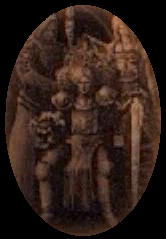
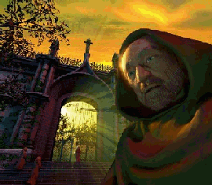
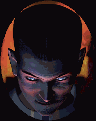

17/07/2001
17/07/2001
-
DISPEL - "POWRÓT BOGÓW"
|
 |
POSŁUCHAJ, MÓJ SYNU, TEJ OPOWIEŚCI...
PEWNEGO RAZU BOGOWIE STORZYLI
KONTYNENT DMAN, A WRAZ Z NIM
LUDZKIE ISTNIENIA. LUDZIE ŻYLI TAM
W POKOJU, A BOGOWIE DOSTARCZALI IM
WSZYSTKIEGO, CZEGO BYŁO IM POTRZEBA:
TRAWY, DRZEW, PTAKÓW... BOGOWIE
BYLI ZADOWOLENI ZE SWEGO CZYNU.
JEDNAK W MIARĘ UPŁYWU CZASU
LUDZIOM ZNUDZIŁ SIĘ POKÓJ NA ŚWIECIE.
ZNIENAWIDZILI SIĘ NAWZAJEM
I DĄŻYLI DO WOJNY... ZRUJNOWALI
ŚWIAT DANY PRZEZ BOGÓW !
HMM... TERAZ JUŻ WIESZ JAK GŁUPI
POTRAFIĄ BYĆ LUDZIE.
BOGOWIE PRZESTRASZYLI SIĘ SWEGO DZIEŁA
STWORZENIA, A NIEKTÓRZY Z NICH CHCIELI JE NAWET
ZNISZCZYĆ.INNI JEDNAK WOLELI POCZEKAĆ W NADZEI,
ŻE LUDZI ZMĘCZY WŁASNA GŁUPOTA.
WÓWCZAS STAŁO SIĘ NAJGORSZE. BÓG ZNISZCZENIA
HARASS, KTÓRY NIENAWIDZIŁ LUDZI, ZSZEDŁ DO DMAN
I ROZPOCZOŁ RZEŹ. BÓG TWORZENIA VARA UDAREMNIŁ
JEDNAK DOKANANIA ZNISZCZENA I WYZWAŁ HARASSA
NA POJEDYNEK. WALKA MIĘDZY LUDŹMI
ZAPOCZĄTKOWAŁA WALKĘ BOGÓW. NIEBO STAŁO SIĘ
CZARNE, A MORZE SPŁYNĘŁO KRWIĄ Z DMAN.CIEMNOŚĆ
I ŚMIERĆ ZAPANOWAŁY NA ZIEMI.
Z POCZĄTKU WOJNA BOGÓW WYDAWAŁA SIĘ
NIE MIEĆ KOŃCA, CHOCIAŻ BÓG MOCY GID STWORZYŁ
KAMIENNEGO GIGANTA ZWANEGO GALGADOLEM; JEGO
SIŁA BYŁA WIĘKSZA NIŻ MOŻESZ SOBIE WYOBRAZIĆ.
OBECNOŚĆ GIGANTA DAWAŁA HARASSOWI PRZEWAGĘ
I MOGŁA PRZECHYLIĆ SZALĘ ZWYCIĘSTWA NA JEGO
STRONĘ. NIEOCZEKIWANIE JEDNAK HARASS ZOSTAŁ
RZUCONY NA KOLANA I UWIĘZIONY GDZIEŚ NA DMAN
PRZEZ HALOMA, KTÓRY PRZYLECIAŁ NA BIAŁYM SMOKU.
TYM SAMYM PRZYMIERZE BOGÓW PRZEPAŁO.
PO TYM WSZYSTKIM VARA POCZUŁ WIELKI ŻAL PO
STRACIE WSZYSTKICH DUSZ. DLATEGO STWORZYŁ OBECNY
LĄD ZWANY ELOHIM I ZABRAŁ TAM JEDNEGO WYBRAŃCA.
POZOSTALI BOGOWIE RÓWNIEŻ SIĘ TAM PRZENIEŚLI.
RESZTA LUDZI POZOSTAŁA NA DMAN JAK TY I JA.
TO NIE WSZYSTKO. PRZEPOWIEDNIA MÓWI, ŻE HARASS
POWRÓCI, GDY DMAN BĘDZIE PEŁNE LUDZI.
W ISTOCIE JEST TO STRASZLIWA KLĄTW, KTÓRĄ LUDZIE
SĄ NAPRAWDE PRZERAŻENI. NA SZCZĘŚCIE VARA
ZŁOŻYŁ OBIETNICĘ, ŻE GDY HARASS POWRÓCI,
ELOHIM - OBIECANY LĄD - ZOSTANIE DLA NAS OTWARTY.
SŁUCHAJ MÓJ SYNU, MOJE DROGIE DZECIĘ !
ŚNIĘ O ELOHIM PRZEZ CAŁY CZAS.
TAM NIE MA CIERPIEŃ, GNIEWU I BÓLU. CZEKA TAM NA
NAS TYLKO MIŁOŚĆ.
TAK... MOJA BABCIA WIELOKROTNIE OPOWIADAŁA
TĘ HISTORIĘ, ZANIM ŚMIERĆ ZAMKNĘŁA JEJ OCZY.
Rozdział I. "Świt"
Na początku była ciemność i istniał tylko Bóg Absolutny.Stworzył trzech bogów: Boga Tworzenia, Boga Istnienia i Boga Zniszczenia. Stworzył takżę wielu innych, Którzy mieli asystować tym trzem. Wtedy był zadowolony. Dman było dziełem trzech bogów. Stworzyli życie na kontynencie, korzystając z mocy Boga Absolutnego. Stworzyli człowieka.
Człowiek jest jedny w swoim rodzaju wśrod boskich tworów. Wyróżnia się wyjątkową zdolnością adaptacji. Wie, jak się rozmnarzać i zagospodarowywać Dman. Jednak szybko się męczy spokojnym życiem. Zdolność adaptacji dana mu przez bogów sprawia, że może mieć kontrole nad słabszymi istotami. W końcu ludzie zaczynają walczyć między sobą, ale nie po to, żeby przetrwać, ale tylko dla zaspokojenia absurdalnego pragnienia władzy. Potrafią zabijać innych, żeby osiągnąć swój cel. Bogowie mieli dylemat: jedni zamierzali pozostawić ludzi samym sobie, a inni - zniszczyć.
Wtedy niespodziewanie Bóg Zniszczenia Harass zmiótł z powierzchni ziemi ludzkie miasto. Od tego czasu zaczęli się kłócić. Podzielili się na dwa obozy: po jednej stroni był Bóg Tworzenia Vara i Bóg Istnienia Numa, a po drugiej Bóg Zniszczenia Harass. Rozpoczął się wielki konflikt, który zrujnował Dman. Gdy Bóg Mocy Gid, który był po stronie Harassa, stworzył giganta Galgadola, zwycięstwo ciemnej strony wydawało się nieuchronne.
Wtedy Bóg Snu Halom, syn Vary, wyśnił smoka. To był olśniewający Biały Smok. Vara i Halom sworzyli wiele potężnych smoków, które walczyły z Galgadolem. Wktótce pokonały Galgadola, a Biały Smok zniszczył Harassa.
Po wojnie wielu bogów opuściło Dman lub zostało wypędzonych za wzniecanie wojny. Zwycięzcy otoczyli opieką ocalałych ludzi. Bogowie czuli się odpowiedzialni za znidzczenie Dman i zagładę wielu istnień z powodu ich uprzedzeń. Dlatego wkrótce potem zdecydowali się opuścić Dman. Teraz ludzie otrzymali pozwolenie na kontrolowanie własnego życia.
|
 |
Rozdział II. "Założenie Świętego Biskupstwa"
Po wojnie ludzie wzieli w swoje ręce wszystkie sprawy w Dman, gdzie odradzało się życie. Zaczęli się przemieszczać i tworzyć nowe nacje. W końcu w Dman powstały trzy potężne krainy. W sercu Dman, wokół góry Kardia, leży kraina Aesh, gdzie kwitnie głównie życie kulturalne. Na północy powstała kraina Shereg, która słynie z magii i śladów obecności bogów; to centrum edukacji mędrców i magów. Na południu w trzeciej krainie mieszka nacja zwana Yam. Na kontynencie Dman powsało jeszcze kilka innych nacji, jednak znikły równie szybko, jak się pojawiły.
Historia Dman tak naprawdę rozpoczęła się od podziału kontynentu między trzy potężne nacje. Jednak aby utrzymać pokój, potrzebowały równie potężnej organizacji, zdolnej pokierować wzajemnymi stosunkami. Założyły więc Watykan, a w nim Święte Biskupstwo, wierząc, że wspólna religja i wiara w tych samych bogów zapobiegną ewentuanym konfliktom. Wszystkie niezgodnosci i problemy były odtąd rozpatrywane przez Święte Biskupstwo. Takie rozwiązanie okazało się pełnym sukcesem i na długi czas zapewniło pokój na kontynencie.
|
 |
Rozdził III. "Bohater papieżem"
Spokój zakłóciło jednak pewne wydarzenie. Nieznana siła obudziła Galgadola, śpiącego w ruinach dawnej siedziby bogów w środkowym Aesh. Zaczął zabijać każdego, kogo zobaczył, i nikt nie mógł go powstrzymać. Nawet ludzie Kościoła i magowie nie zdołali zapobiec destrukcji.
Watykan zwołał nadzwyczajną radę, która miała negocjować z Galgadolem. Na spotkanie z nim wysłano najwspanialszych rycerzy, żołnierzy i magów. Niestety, ich ofiarność nie powstrzymała giganta stworzonego przez Boga Mocy Gida.
Gdy wydawało się, że nie ma już sposobu na Galgadola, do Watykanu przybył młody ksiądz imieniem Piach. W sobie tylko znany, magiczny sposób, zabił i poćwiartował Galgadola.
Młody ksiądz został obwołany światowym bohaterem i otrzymał posadę w Watykanie u boku papieża. Dalej wypadki przybrały nieoczekiwany obrót. Wkrótce po przybyciu Piacha do Watykanu znaleziono martwego papieża Shan Chkela. Nie było jednak dowodów morderstwa. Najlepszym i jedynym kandydatem na jego miejsce okazał się młody ksiądz, ponieważ wszyscy inni, którzy mogli zająć to stanowisko, zostali zabici przez Galgadola. Zatem Piacha wybrano nowym papieżem.
Ludzie cieszyli się z tego wyboru. Jednak w miarę upływu czasu w Watykanie zaczęły się dziać dziwne rzeczy. Piach jako papież miał władzę absolutną i mógł robić w zasadzie wszystko, na co miał ochotę. Najpierw ograniczył nauki teologiczne. Wydał zakaz badania pozostałości po czasach bogów wszystkim, którzy nie mieli zezwolenia Świętego Biskupstwa. Ludzie występujący czynem i słowem przeciwko papieżowi byli mordowani bez względu na nację. Wprawdzie Aesh, Yam i Shereg próbowały się przeciwstawić rządom, Piacha, ale okazały się nie dość silne wobec potęgi Watykanu. Szczególnie ludność Aesh była nastawiona wrogo do Świętego Biskupstwa, jednak nie mogła nic zrobić, ponieważ Watykan był częścią krainy Aesh.
Niegdyś Piach był światowym bohaterem, który usunął Galgadola. Dziś jest największym na świecie łajdakiem.